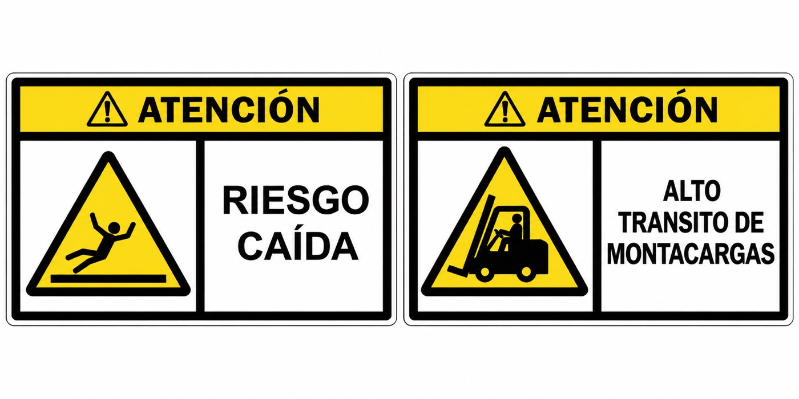
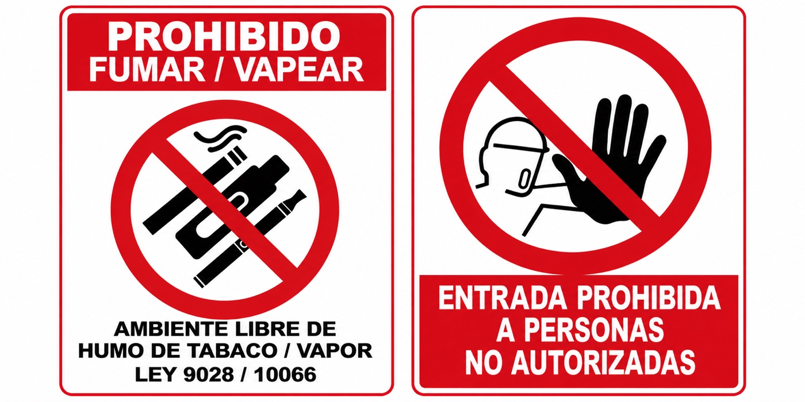
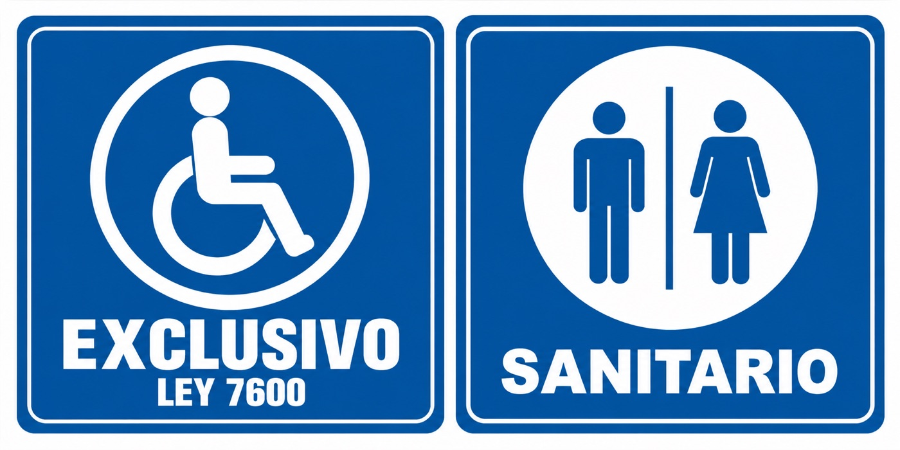
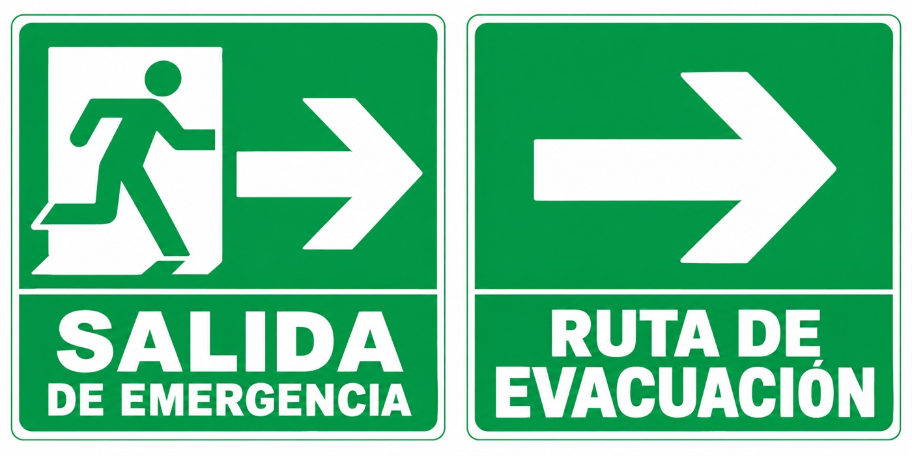
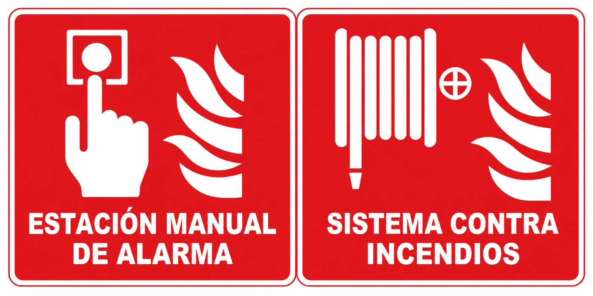

Prevención
Advertencia y prevención
Señales para identificar riesgos, peligros y condiciones que requieren precaución.
Consultar opciones →Soluciones visuales para advertir riesgos, comunicar restricciones, informar y orientar rutas de evacuación.
Estas son algunas de las opciones disponibles. Consulte con nuestro equipo el material, las dimensiones y la rotulación que necesita.

Señales para identificar riesgos, peligros y condiciones que requieren precaución.
Consultar opciones →
Señales para comunicar restricciones, accesos controlados y conductas no permitidas.
Consultar opciones →
Señales para identificar servicios, áreas, accesibilidad y espacios de uso común.
Consultar opciones →
Señales para orientar salidas, rutas de evacuación y recursos de emergencia.
Consultar opciones →
Señales para ubicar alarmas, equipos y sistemas de respuesta ante incendios.
Consultar opciones →Imágenes de referencia suministradas por OcuPro 360. Diseños, materiales y medidas sujetos a disponibilidad.
Consulte opciones, medidas y disponibilidad por teléfono, WhatsApp o correo electrónico.